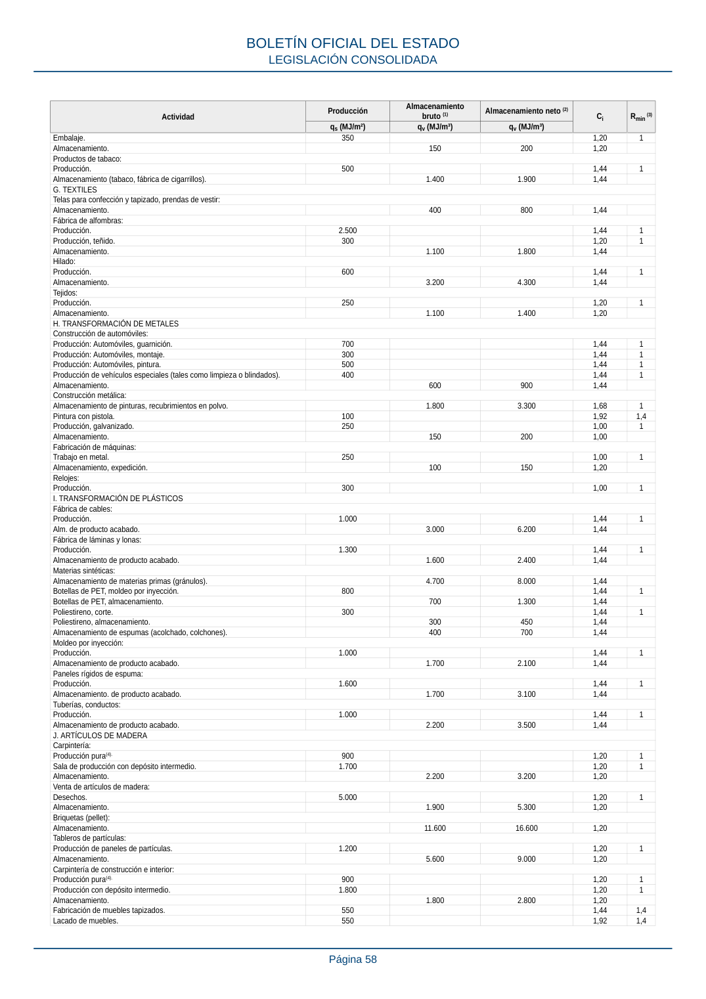
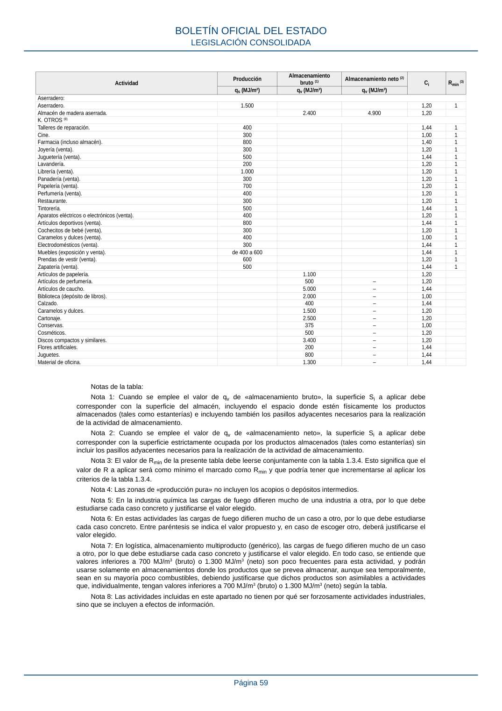

RSCIEI · Fragmento de PDF p56 · versión 2025-04-10 · capa asociada
Formatos: JSON compacto · Markdown · PDF fuente
Ámbito del documento · texto del ámbito · documento y tablas
ID técnico a0126 · PDF pág. 56-59 · jerarquía no validada por persona · no es capítulo: sin_linea_de_encabezado · padre: raíz · literal original en el contenido: «Valores de densidad de carga de fuego media de actividades de fabricación (qs), de almacenamiento (qv) y sus coeficientes asociados (Ci, Rmin)»
Valores de densidad de carga de fuego media de actividades de fabricación (qs), de almacenamiento (qv) y sus coeficientes asociados (Ci, Rmin) almacenamiento (qv) y sus coeficientes asociados (Ci, Rmin) Actividad Producción Almacenamiento bruto (1) Almacenamiento neto (2) Ci Rmin (3) qs (MJ/m²) qv (MJ/m³) qv (MJ/m³) A. OFICINAS. Oficinas. 700 1,44 1 Salas de reuniones, salas de conferencias. 300 1,44 1 Archivos. 1.600 2.100 1,20 B. CARTÓN, PAPEL Fábrica de cartón/cartón ondulado: Almacenamiento de materias primas. 1.700 2.200 1,20 Almacenamiento en bobinas. 3.700 14.700 1,20 Producción, transformación. 1.500 1,20 1 Fábrica de papel: Almacenamiento de materias primas (celulosa). 20.000 22.000 1,00 Almacenamiento a granel (papel viejo, prensado). 6.900 8.600 1,20 Almacenamiento a granel (papel viejo, suelto). 2.800 4.000 1,40 Producción, transformación. de 200 a 1.200 (700) (6) 1,20 1 Almacenamiento de producto acabado. 2.800 5.100 1,20 Imprenta: Almacenamiento de papel en bobinas. 4.200 6.200 1,20 Producción. 500 1,68 1,4 Producción con local para desenrollado del papel. 2.100 1,68 1,4 Expedición, embalaje. de 200 a 2.400 (1.800) (6) de 300 a 3.000 (2.500) (6) 1,20 1 BOLETÍN OFICIAL DEL ESTADO LEGISLACIÓN CONSOLIDADA Página 56 Actividad Producción Almacenamiento bruto (1) Almacenamiento neto (2) Ci Rmin (3) qs (MJ/m²) qv (MJ/m³) qv (MJ/m³) Encuadernación. 2.400 1,20 1 C. INDUSTRIA ALIMENTARIA Bebidas sin alcohol (o de baja graduación): Relleno. 350 1,20 1 Almacenamiento. 600 900 1,20 Otras bebidas específicas: Bodegas (vinos). 80 1,00 1 Bebidas alcohólicas (licores). 700 de 1,20 a 1,40 1 Bebidas alcohólicas, almacenamiento. 800 - de 1,00 a 1,40 Chocolate: Almacenamiento de materias primas (incluyendo embalaje). 5.200 8.200 1,44 Producción, conchado. 1.200 1,20 1 Alm. de producto acabado, expedición. 1.800 2.900 1,44 Comercio alimentario: Almacenamiento de productos frescos, expedición. 900 1.800 1,20 Almacenamiento de envases. 1.800 2.400 1,20 Envasado, despiece de carnes. 1.900 1,20 1 Fabricación de productos lácteos: Producción de queso. 300 1,00 1 Almacenamiento de queso. 1.100 1.600 1,00 Granos (harinera): Almacenamiento de harina. 3.900 5.300 1,20 Producción de harina. 1.100 1,20 1,4 Grasas, aceites, mantequilla: Producción de grasas, aceites. 8.500 1,68 1,4 Almacenamiento de grasas, aceites, mantequilla. 5.300 7.900 1,68 Pastas alimenticias: Producción de pastas alimenticias. 700 1,20 1,4 Almacenamiento de pastas alimenticias. 1.800 2.700 1,20 Productos de panadería y pastelería: Almacenamiento de materias primas. 1.500 2.800 1,20 Producción. 500 1,44 1,4 Almacenamiento de producto acabado, expedición. 2.000 2.200 1,44 Azúcar: Producción, embalaje. 200 1,20 1 Almacenamiento. 4.600 6.300 1,20 Congelados: Producción. 800 1,00 1,4 Almacén. 375 - 1,00 D. INDUSTRIA QUÍMICA Industria química general: Producción. de 500 a 7.800 (5) 1,68 1,4 Almacenamiento, disolventes. de 1.800 a 6.800 (5) - 1,92 1 Almacenamiento, resina epoxi. 3.800 5.000 1,44 Productos farmacéuticos: Producción. 900 1,68 1,4 Almacenamiento. 1.800 2.500 1,68 E. LOGÍSTICA Centros de distribución: Almacenamiento multiproducto (genérico). de 300 a 8.100 (7) de 400 a 16.200 (7) 1,44 Almacenamiento de productos de jardín. 1.500 3.100 1,44 Almacenamiento de aparatos eléctricos. 1.000 1.600 1,44 Almacenamiento de muebles (excepto metálicos). 1.800 2.800 1,44 F. MATERIAS Y MERCANCÍAS DIVERSAS Accesorios de automóviles: Almacén de recambios. 800 1.300 1,44 Almacenamiento de líquidos (aceites, limpiadores, disolventes). 1.200 3.000 1,68 1 Almacén de neumáticos. 1.000 1.500 1,44 Forraje: Producción de alimentos compuestos. 1.400 1,20 1,4 Almacenamiento de alimentos compuestos. 1.300 2.000 1,20 Electrodomésticos: Producción y embalaje. 150 1,44 1 Almacenamiento. 1.000 1.600 1,44 Reciclaje de residuos: Residuos especiales (pinturas, disolventes). 2.500 6.100 1,68 1 Residuos especiales (ácidos). 1.300 2.800 1,20 Reciclaje de plásticos, almacén. 3.800 6.000 1,44 Reciclaje de plásticos, producción. 1.200 1,44 1 Astillas y recortes de madera. 1.500 2.100 1,20 Materiales de construcción: Ladrillos silicocalcáreos. 350 1,00 1 Hormigón. 300 1,00 1 Madera. 1.600 3.200 1,20 Materiales de aislamiento sintéticos: poliestireno espumado (EPS y XPS). 600 700 1,44 Venta de artículos de construcción. 900 1.500 1,44 1 Producción de vidrio: BOLETÍN OFICIAL DEL ESTADO LEGISLACIÓN CONSOLIDADA Página 57 Actividad Producción Almacenamiento bruto (1) Almacenamiento neto (2) Ci Rmin (3) qs (MJ/m²) qv (MJ/m³) qv (MJ/m³) Embalaje. 350 1,20 1 Almacenamiento. 150 200 1,20 Productos de tabaco: Producción. 500 1,44 1 Almacenamiento (tabaco, fábrica de cigarrillos). 1.400 1.900 1,44 G. TEXTILES Telas para confección y tapizado, prendas de vestir: Almacenamiento. 400 800 1,44 Fábrica de alfombras: Producción. 2.500 1,44 1 Producción, teñido. 300 1,20 1 Almacenamiento. 1.100 1.800 1,44 Hilado: Producción. 600 1,44 1 Almacenamiento. 3.200 4.300 1,44 Tejidos: Producción. 250 1,20 1 Almacenamiento. 1.100 1.400 1,20 H. TRANSFORMACIÓN DE METALES Construcción de automóviles: Producción: Automóviles, guarnición. 700 1,44 1 Producción: Automóviles, montaje. 300 1,44 1 Producción: Automóviles, pintura. 500 1,44 1 Producción de vehículos especiales (tales como limpieza o blindados). 400 1,44 1 Almacenamiento. 600 900 1,44 Construcción metálica: Almacenamiento de pinturas, recubrimientos en polvo. 1.800 3.300 1,68 1 Pintura con pistola. 100 1,92 1,4 Producción, galvanizado. 250 1,00 1 Almacenamiento. 150 200 1,00 Fabricación de máquinas: Trabajo en metal. 250 1,00 1 Almacenamiento, expedición. 100 150 1,20 Relojes: Producción. 300 1,00 1 I. TRANSFORMACIÓN DE PLÁSTICOS Fábrica de cables: Producción. 1.000 1,44 1 Alm. de producto acabado. 3.000 6.200 1,44 Fábrica de láminas y lonas: Producción. 1.300 1,44 1 Almacenamiento de producto acabado. 1.600 2.400 1,44 Materias sintéticas: Almacenamiento de materias primas (gránulos). 4.700 8.000 1,44 Botellas de PET, moldeo por inyección. 800 1,44 1 Botellas de PET, almacenamiento. 700 1.300 1,44 Poliestireno, corte. 300 1,44 1 Poliestireno, almacenamiento. 300 450 1,44 Almacenamiento de espumas (acolchado, colchones). 400 700 1,44 Moldeo por inyección: Producción. 1.000 1,44 1 Almacenamiento de producto acabado. 1.700 2.100 1,44 Paneles rígidos de espuma: Producción. 1.600 1,44 1 Almacenamiento. de producto acabado. 1.700 3.100 1,44 Tuberías, conductos: Producción. 1.000 1,44 1 Almacenamiento de producto acabado. 2.200 3.500 1,44 J. ARTÍCULOS DE MADERA Carpintería: Producción pura(4). 900 1,20 1 Sala de producción con depósito intermedio. 1.700 1,20 1 Almacenamiento. 2.200 3.200 1,20 Venta de artículos de madera: Desechos. 5.000 1,20 1 Almacenamiento. 1.900 5.300 1,20 Briquetas (pellet): Almacenamiento. 11.600 16.600 1,20 Tableros de partículas: Producción de paneles de partículas. 1.200 1,20 1 Almacenamiento. 5.600 9.000 1,20 Carpintería de construcción e interior: Producción pura(4). 900 1,20 1 Producción con depósito intermedio. 1.800 1,20 1 Almacenamiento. 1.800 2.800 1,20 Fabricación de muebles tapizados. 550 1,44 1,4 Lacado de muebles. 550 1,92 1,4 BOLETÍN OFICIAL DEL ESTADO LEGISLACIÓN CONSOLIDADA Página 58 Actividad Producción Almacenamiento bruto (1) Almacenamiento neto (2) Ci Rmin (3) qs (MJ/m²) qv (MJ/m³) qv (MJ/m³) Aserradero: Aserradero. 1.500 1,20 1 Almacén de madera aserrada. 2.400 4.900 1,20 K. OTROS (8) Talleres de reparación. 400 1,44 1 Cine. 300 1,00 1 Farmacia (incluso almacén). 800 1,40 1 Joyería (venta). 300 1,20 1 Juguetería (venta). 500 1,44 1 Lavandería. 200 1,20 1 Librería (venta). 1.000 1,20 1 Panadería (venta). 300 1,20 1 Papelería (venta). 700 1,20 1 Perfumería (venta). 400 1,20 1 Restaurante. 300 1,20 1 Tintorería. 500 1,44 1 Aparatos eléctricos o electrónicos (venta). 400 1,20 1 Artículos deportivos (venta). 800 1,44 1 Cochecitos de bebé (venta). 300 1,20 1 Caramelos y dulces (venta). 400 1,00 1 Electrodomésticos (venta). 300 1,44 1 Muebles (exposición y venta). de 400 a 600 1,44 1 Prendas de vestir (venta). 600 1,20 1 Zapatería (venta). 500 1,44 1 Artículos de papelería. 1.100 1,20 Artículos de perfumería. 500 – 1,20 Artículos de caucho. 5.000 – 1,44 Biblioteca (depósito de libros). 2.000 – 1,00 Calzado. 400 – 1,44 Caramelos y dulces. 1.500 – 1,20 Cartonaje. 2.500 – 1,20 Conservas. 375 – 1,00 Cosméticos. 500 – 1,20 Discos compactos y similares. 3.400 – 1,20 Flores artificiales. 200 – 1,44 Juguetes. 800 – 1,44 Material de oficina. 1.300 – 1,44 Notas de la tabla: Nota 1: Cuando se emplee el valor de qv de «almacenamiento bruto», la superficie Si a aplicar debe corresponder con la superficie del almacén, incluyendo el espacio donde estén físicamente los productos almacenados (tales como estanterías) e incluyendo también los pasillos adyacentes necesarios para la realización de la actividad de almacenamiento. Nota 2: Cuando se emplee el valor de qv de «almacenamiento neto», la superficie Si a aplicar debe corresponder con la superficie estrictamente ocupada por los productos almacenados (tales como estanterías) sin incluir los pasillos adyacentes necesarios para la realización de la actividad de almacenamiento. Nota 3: El valor de Rmin de la presente tabla debe leerse conjuntamente con la tabla 1.3.4. Esto significa que el valor de R a aplicar será como mínimo el marcado como Rmin y que podría tener que incrementarse al aplicar los criterios de la tabla 1.3.4. Nota 4: Las zonas de «producción pura» no incluyen los acopios o depósitos intermedios. Nota 5: En la industria química las cargas de fuego difieren mucho de una industria a otra, por lo que debe estudiarse cada caso concreto y justificarse el valor elegido. Nota 6: En estas actividades las cargas de fuego difieren mucho de un caso a otro, por lo que debe estudiarse cada caso concreto. Entre paréntesis se indica el valor propuesto y, en caso de escoger otro, deberá justificarse el valor elegido. Nota 7: En logística, almacenamiento multiproducto (genérico), las cargas de fuego difieren mucho de un caso a otro, por lo que debe estudiarse cada caso concreto y justificarse el valor elegido. En todo caso, se entiende que valores inferiores a 700 MJ/m3 (bruto) o 1.300 MJ/m3 (neto) son poco frecuentes para esta actividad, y podrán usarse solamente en almacenamientos donde los productos que se prevea almacenar, aunque sea temporalmente, sean en su mayoría poco combustibles, debiendo justificarse que dichos productos son asimilables a actividades que, individualmente, tengan valores inferiores a 700 MJ/m3 (bruto) o 1.300 MJ/m3 (neto) según la tabla. Nota 8: Las actividades incluidas en este apartado no tienen por qué ser forzosamente actividades industriales, sino que se incluyen a efectos de información. BOLETÍN OFICIAL DEL ESTADO LEGISLACIÓN CONSOLIDADA Página 59



PDF fuente redistribuible: copia fiel enlazada en esta página (SHA256 verificado).